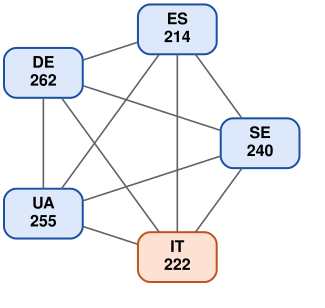
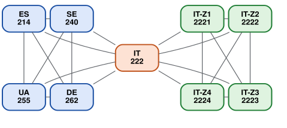
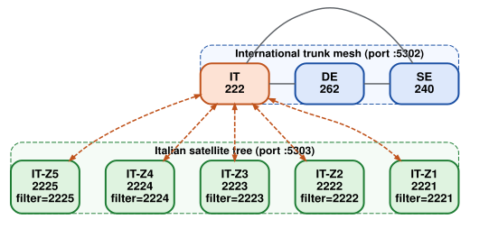
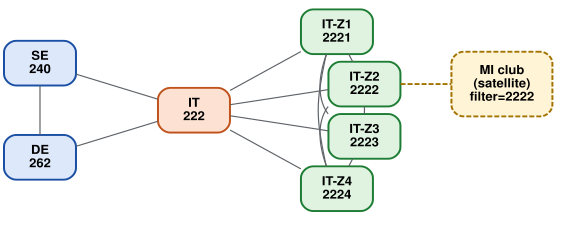
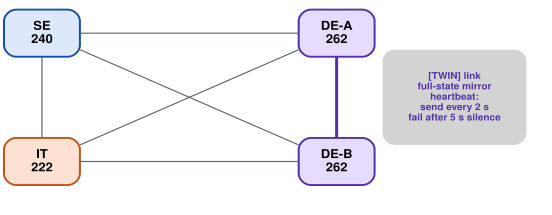

svxreflector that adds trunks, twins,
satellites, filters and more.
GeuReflector links separate reflector instances in two distinct ways:
Trunk (TCP :5302) — bidirectional, designed for
full-mesh peering. Each peer owns one or more numeric prefixes. TG routing is
by longest-prefix-match against the union of all prefixes in
the mesh (every TrunkLink learns the full table at startup).
Audio relay is single-hop: only the prefix owner fans audio
out to other interested peers. Non-owners that receive trunk audio deliver it
locally and stop. The source peer is excluded from the owner's fanout to
prevent loops.
Satellite (TCP :5303) — one-to-many star.
A satellite reflector connects out to a parent reflector and mirrors TGs in
both directions. An optional SATELLITE_FILTER on the satellite
side scopes the mirrored set in both directions: the satellite
suppresses non-matching outbound, and the parent learns the filter via
MsgPeerFilter (type 122) and drops non-matching forwards going
down.
Two other behaviours show up repeatedly in the flow descriptions below:
PeerTalkerStart / PeerAudio for a TG. Until
that happens, the owner doesn't know to fan that TG back to that peer.
Interest expires after 10 minutes of inactivity on
that TG from that peer (or immediately on trunk disconnect).222, SE = 240,
DE = 262. Reusing the DMR MCC layout makes ownership
self-documenting.Country gateways only. Every reflector owns its country's MCC and trunks directly to every other country.

TG 240xx → SE · TG 262xx → DE ·
TG 222xx → IT.
An SE client keys TG 22299. SE's prefix table maps
222 → IT, so SE sends to IT. IT delivers locally and fans the
audio out to DE (if it has shown interest in 22299 recently);
SE is excluded as the source.
This layer is the foundation. Everything else stacks on top of it.
Italy adds per-Zone reflectors that form a national trunk mesh together with IT 222. Foreign countries see only IT 222 — the Zone prefixes are not advertised internationally. The country gateway is the hinge between the international mesh and the national mesh.

| Prefix | Reflector | Coverage |
|---|---|---|
2221 | IT-Z1 | Nord-Ovest (Liguria, Piemonte, Val d'Aosta) |
2222 | IT-Z2 | Lombardia |
2223 | IT-Z3 | Triveneto (FVG, Trentino-AA, Veneto) |
2224 | IT-Z4 | Emilia-Romagna |
2225 | IT-Z5 | Toscana |
2226 – 2229 | IT-Z6..Z9 | Centro, Puglia, Sud, Sicilia |
Each reflector's prefix table is built from its own config:
local prefix plus the REMOTE_PREFIX of each
[TRUNK_x] section. Prefixes are not gossiped between peers.
That means SE only knows the prefixes it has trunks for — namely
222 (IT) and 262 (DE). SE has no idea that
2222 exists, even though Z2 owns it inside Italy.
| TG | Owner (globally) | SE's view | IT 222's view |
|---|---|---|---|
22221 | IT-Z2 (longest match 2222) |
only 222 matches → send to IT 222 |
2222 matches → Z2 is owner |
22299 | IT 222 (only 222 matches) |
send to IT 222 | own this TG |
2629 | DE (only 262 matches) |
send to DE | send to DE |
A Z2 client keying 22221 (Lombardia): Z2
owns 2222, so it plays locally and fans out on the trunk side
to interested peers in the national mesh — IT 222 and the other Zones. It
does not trunk-forward to SE/DE (it has no trunks to them).
An SE client keying the same 22221: SE's
table has only 222 as a match, so it sends to IT 222 thinking
IT is the owner. IT 222 receives it, sees that Z2 actually owns
2222 in its own trunk table, and bridges the frame
onward to Z2 via the gateway-routing path
(Reflector::shouldRelayInbound returns true because IT has a
prefix route for 2222). Z2 plays locally and fans the audio
out to its national peers (excluding IT as the source). The return leg
works the same way: audio from a Z3 client reaches SE because IT's
isPeerInterestedTG for 22221 was registered on
the SE side when SE's PTT first arrived.
[TRUNK_x] section pointing at the
regional reflector — regional TGs do not need to be listed in
CLUSTER_TGS. CLUSTER_TGS is the right tool
for TGs that cannot be resolved by prefix because no
reflector owns them: TG 91 for worldwide chat
(international domain), or 112 for nationwide broadcast
inside a country (national domain). Configure those on every reflector
that should join the broadcast.
222).Pull the Zones off the international mesh entirely. Only IT 222 is a trunk peer; the Zones become satellites of IT 222.
[SATELLITE] SECRET is a single shared
string used to validate every inbound satellite
(Reflector.cpp:2675-2701). If the secret leaks, an attacker
can connect as any sat_id and present any
SATELLITE_FILTER of their choosing — there's no per-satellite
scoping on the parent side. This makes §3 most appropriate for small
deployments under one trusted operator. For multi-operator national
meshes, prefer §2 (national trunk mesh) where each
[TRUNK_x] has its own SECRET, or §4 (hybrid)
for a single NAT'd downstream site. Future work:
per-satellite secrets keyed by sat_id, mirroring how trunks
already work — until then, treat the shared secret as a design constraint
of this pattern.

SATELLITE_FILTER set to its own prefix.An SE client keys 22241 (Emilia-Romagna). SE only knows
222 → IT (the Zone prefixes are not on the international mesh
in this variant), so SE→IT 222 over the trunk. IT 222 delivers locally and
mirrors down the satellite tree; only Z4's filter (2224) accepts
22241, so Z4 receives it. Z1/Z2/Z3/Z5 see nothing because
IT 222 dropped those forwards.
A Z3 client keying 2629 (DE) goes Z3 → IT 222
(satellite mirror up) → DE (intl trunk forward). Two-hop cross-country path;
no daisy-chain trunk relay needed because the satellite hop is independent
of the trunk single-hop rule.
| Property | National trunk mesh (§2) | Satellite tree (§3) |
|---|---|---|
| TCP connections per Zone | M − 1 within the national mesh (Zones + IT 222) | 1 (to IT 222) |
| NAT story | Zones need inbound reachability from other Zones + IT 222 | only IT 222 needs an inbound port |
| IT 222 outage | Zones keep talking to each other; international reach is lost | whole country offline |
| Foreign → regional TG reach | works automatically via gateway prefix routing on IT 222 (shouldRelayInbound) |
works automatically via parent mirror + filter |
| Fanout cost on a busy Zone | O(other national peers) | O(0) — parent does it |
| Prefix advertised upstream | only 222 (Zones not visible to SE/DE) |
only 222 (Zones hidden behind parent) |
Hybrid layout: keep the §2 two-domain structure (intl mesh + national mesh joined at IT 222), and let one Zone host its own satellite reflector. The Zone itself is not a satellite — it wears two hats: trunk peer in the national mesh, parent to its own satellite. Two motivations apply, often together:
[USERS] / [PASSWORDS]
database. Z2 admin holds Z2's user DB and the
[SATELLITE] SECRET that MI presents to attach; MI
admin holds MI's own [USERS] /
[PASSWORDS] — only MI's V2 clients authenticate
against it. Audio federates over the satellite link while
authentication state stays separated on each side.
22221: MI mirrors up to
Z2 (Lombardia). Z2 owns 2222 — plays locally, fans on the
trunk side to interested peers in the national mesh
(IT 222 / Z1 / Z3 / Z4 if they've shown interest), and skips MI on the
satellite side because MI is the source. Z2 does not trunk-forward to
SE/DE — it has no trunks to them.22221: SE only knows
222 → IT. SE→IT 222 over the trunk. IT 222 isn't the
owner of 2222, but its gateway-routing rule
(shouldRelayInbound finds a 2222 route in
IT's trunk table) bridges the frame to Z2. Z2 plays locally and
mirrors down to MI through the satellite link (filter 2222
matches). The return leg works symmetrically through
isPeerInterestedTG.22241 (Emilia-Romagna,
owned by Z4): MI→Z2 (satellite up). Z2 isn't the owner — its trunk-side
forwarding sees 2224 and trunk-sends to Z4. Z4 plays
locally and fans to interested peers, including Z2 only if
Z2 has previously PTT'd on 22241. Consequence: the first
MI→22241 PTT works outbound but won't get return audio
until Z2 is registered as interested at Z4. The MI→Z2→Z4 PTT itself
registers Z2's interest, so for the next ~10 min audio from any other
client on 22241 flows Z4→Z2→MI.SATELLITE_FILTER like 2222 prevents
MI from reaching anything outside Lombardia: filter is bidirectional, so MI
suppresses non-2222* outbound and Z2 drops non-2222*
forwards going down. The MI→22241 example above only works if
the filter is broadened to 222 (or unset). Use a tight filter
only when the satellite truly is single-purpose (e.g. a regional repeater
that should never hear other Zones' traffic).
A twin is a purpose-built link type for running two
reflector instances as a redundant pair. Both nodes declare the
same LOCAL_PREFIX, mirror their full TGHandler
state to each other over a [TWIN] link, and present as a single
logical reflector to the rest of the world. SvxLink nodes list both endpoints
in their HOSTS setting for transparent failover.

LOCAL_PREFIX=262). External peers (IT, SE) hold one
[TRUNK_x] section with PAIRED=1 and
HOST=de-a,de-b; each frame goes to one socket at a time,
sticky with failover. The bold purple [TWIN] link mirrors
full state symmetrically.| Property | Trunk | Satellite | Twin |
|---|---|---|---|
| Directionality | symmetric | one-way bias (parent→satellite) | symmetric |
| Prefix ownership | distinct per node | n/a | identical on both nodes |
| Filtering | isSharedTG / isOwnedTG |
none (all TGs) | none (full mirror inside the pair) |
| Peers per section | 1 | many satellites per parent | exactly 1 (strictly pairwise) |
| External trunk ownership | each node holds its own | parent-only | both hold; external peer picks one socket per frame |
| Heartbeat cadence (TX = send interval, RX = silence timeout) | 10 s / 15 s | 10 s / 15 s | 2 s / 5 s (LAN-close) |
262) and
mirrors state to DE-A over the twin link so DE-A's clients can't
grab the same TG simultaneously. External trunks: DE-B forwards on
its own external trunks to interested peers; DE-A does not
re-forward (otherwise external peers would see duplicates).[TRUNK_DE] section has PAIRED=1 and
HOST=de-a,de-b, so IT holds two TCP sockets but sends
each frame to its sticky-selected endpoint (say DE-A). DE-A delivers
locally, mirrors to DE-B over the twin link so DE-B's local clients
hear it too, and DE-B suppresses re-forwarding back out.TGHandler state.MsgPeerHello tie-breaks (lower wins,
loser yields). This is the same mechanism trunks use for cross-site
arbitration — reused intra-pair. Two new message types
(MsgTwinExtTalkerStart / Stop, types 123/124)
carry external-trunk talker state across the twin so the partner won't
let local clients key a TG that's already busy on an external peer.
Twin layout is the right answer when you need HA failover for clients on a single reflector site — for instance, two physical servers on the same LAN, both with public IPs, fronting a cluster of SvxLink nodes. It composes with everything else: the twin pair can simultaneously be a country gateway in the international mesh (§1), a parent of regional satellites (§3), or a member of a national trunk mesh (§2). Don't reach for twins just to share traffic across two boxes — that's what plain trunks are for.
| Constraint | Use |
|---|---|
| Just one reflector per country, no regional split needed | International only (§1) |
| Each Zone has a public IP; want regional autonomy and resilience to gateway outage | National trunk mesh joined at the gateway (§2) |
| Most Zones are behind NAT; only the country gateway has a public IP; one trusted operator runs the lot | Satellite tree (§3) |
§2 layout overall, plus a sub-group needs its own reflector — either NAT'd or with its own user DB to delegate ([USERS]/[PASSWORDS] separated) |
Hybrid — satellite under a regional reflector (§4) |
| HA failover for SvxLink clients on a single site (two boxes, same LAN) | Twin pair (§5) — composes with §1–§4 |
The shapes compose: the international layer (§1) is always present, and §2, §3, §4 are alternative ways to fan out inside a country. §5 is orthogonal — any single reflector role above can be played by a twin pair instead.
Talk-group prefixes align with the ITU-T E.212 Mobile Country Code (MCC) plan, so prefix ownership is self-documenting and globally consistent.
| Range | Use |
|---|---|
0 |
Special. TG 0 is a protocol
sentinel meaning "no TG selected." V2 clients authenticate with
tg=0 and then select a real TG with
MsgSelectTG. Audio is never sent or received on
TG 0. |
001, other 0xx |
ITU test networks. Not assigned to any country. |
1xx |
Reserved by ITU. Not assigned to any country. |
2xx |
Europe. Lowest country MCC:
202 Greece. (200, 201 are
unassigned.) |
3xx | North America (incl. Greenland, Caribbean) |
4xx | Asia, Middle East |
5xx | Oceania |
6xx | Africa |
7xx | South & Central America |
8xx, 9xx |
Reserved / non-country use (rare assignments) |
Safe cluster-TG ranges: 100–199 and
800–999. Pick cluster TGs (the kind that bypass
prefix ownership — see §2) from these ranges:
1xx block is reserved by ITU and contains no
country MCC.8xx and 9xx blocks are reserved /
non-country (rare assignments only).A cluster TG drawn from either range cannot collide with any current
or future country prefix (countries live entirely in
200–799). Combined that's roughly 300 available
numbers — more than enough for worldwide, nationwide, and any thematic
broadcast TGs you want to define.
Avoid 200–799 (country prefix collisions)
and the 0xx/1–99 ranges (the
latter are technically safe but unconventional for DMR/SvxLink TG
numbering — short numbers are rare in practice). The well-known TG
91 (worldwide chat) is a pre-existing convention that
predates this recommendation; new cluster-TG assignments should follow
the 100–199 / 800–999 rule.
SATELLITE_FILTER is bidirectional and advertised to the
parent.MsgPeerHello — lower wins. The loser defers and blocks
local clients from interrupting.